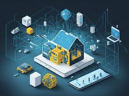
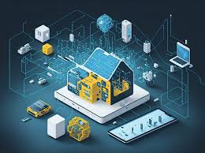
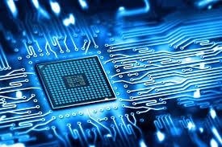
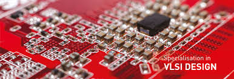

Internet Of Things
The Internet of things (IoT) describes devices with sensors, processing ability, software and other technologies that connect and exchange data with other devices and systems over the Internet or other communications networks. The Internet of things encompasses electronics, communication, and computer science engineering. "Internet of things" has been considered a misnomer because devices do not need to be connected to the public internet; they only need to be connected to a network and be individually addressable.
 

Importance of IOT
- IoT enables organizations to track assets, optimize systems and reduce waste through advanced data collection and analytics. Smart sensors can monitor production lines for failures, ensure machines receive preventative maintenance when needed, or adjust heating and lighting usage in offices based on occupancy. This leads to less downtime, higher employee productivity and significant cost savings.
- The data gathered by connected IoT devices provides insights that simply were not possible before. Real-time tracking of products, equipment and interactions allows businesses to analyzing performance, spot trends and make continuous improvements.For example, health IoT devices can monitor patient vitals 24/7, allowing doctors to provide personalized care while avoiding the need for hospital visits. And smart meters enable utility companies to tweak pricing based on real-time demand.
- IoT automation refers to devices’ ability to take action without human intervention. Smart heating systems power down when rooms are unused; self-driving trucks deliver goods without a driver; and Alexa decides to order milk when your fridge runs low.This automation allows businesses to reduce labor costs while accelerating decision velocity for optimized operations. As AI and machine learning mature, organizations will continue expanding their use of IoT automation.
- IoT also has powerful implications for understanding and connecting with customers. Retailers can now track real-world customer journeys through stores to optimize layouts. Utilities can rapidly detect outages through smart grid infrastructure. And product companies can analyze how customers are actually using devices to inform design improvements.Even simple conveniences like remotely monitoring and brewing coffee from your smartphone demonstrate IoTs potential to connect businesses to consumers in new ways.
Applications of IOT
- Wearable technology is the hallmark of IoT applications and one of the earliest industries to deploy IoT. We have fit bits, heart rate monitors and smartwatches these days.
- The smart home is probably the first thing when we talk about the IoT application. The example we see the AI home automation is employed by Mark Zuckerberg. Alan Pan's home automation system, where a string of musical notes uses in-house functions.
- IoT applications can transform reactive medical-based systems into active wellness-based systems. Resources that are used in current medical research lack important real-world information. It uses controlled environments, leftover data, and volunteers for clinical trials. The Internet of Things improves the device's power, precision and availability.
- Most of you have heard about the term smart city. Smart city uses technology to provide services. The smart city includes improving transportation and social services, promoting stability and giving voice to their citizens.
- By the year 2050, the world's growing population is estimated to have reached about 10 billion. To feed such a large population, agriculture needs to marry technology and get the best results. There are many possibilities in this area. One of them is Smart Greenhouse.
- A connected car is a technology-driven car with Internet access and a WAN network. The technology offers the user some benefits such as in-car infotainment, advanced navigation and fuel efficiency
Artificial Intelligence
Artificial intelligence (AI), in its broadest sense, is intelligence exhibited by machines, particularly computer systems. It is a field of research in computer science that develops and studies methods and software which enable machines to perceive their environment and uses learning and intelligence to take actions that maximize their chances of achieving defined goals. Such machines may be called AIs.


Importance of AI
- Artificial Intelligence has made an unprecedented impact in the medical industry and hence changed the face of the medical industry. Various machine learning algorithms and models have efficiently predicted various important use cases, such as determining whether a particular patient has malignant or benign cancer or tumor based on symptoms, health records, and history. It is also being used in future predictions where patients are well informed about their deteriorating health and what they should do to return to a normal and healthy life.
- One of the major systematic transport in the world is air transport, and there has become an urgent need to optimize their mode of operation. Here came the involvement of Artificial Intelligence, where the machine is involved in planning the routes along with the flight landing and take-off charts.
- Artificial Intelligence plays a vital role in managing financial transactions and handling many other activities in the bank. The day-to-day operations of banks, such as transactions and financial operations, stock market money and their management, etc., are being handled more easily and efficiently by these machine learning models.
- From virtual reality games to today's modern games, this is one industry where artificial intelligence has made the biggest leap forward. Bots are always there for you to play with, so you don't need another person to play.
- Artificial intelligence has been used in many aircraft, navigation maps, taxing routes, and a quick examination of the entire cockpit panel to ensure the correct operation of each component. Hence, it gives very promising results and is being adopted very frequently. The ultimate aim of artificial intelligence in air transport is to give easier and more comfortable travel to human beings.
Applications of AI
- AI can be used for gaming purpose. The AI machines can play strategic games like chess, where the machine needs to think of a large number of possible places.
- AI and finance industries are the best matches for each other. The finance industry is implementing automation, chatbot, adaptive intelligence, algorithm trading, and machine learning into financial processes.
- The security of data is crucial for every company and cyber-attacks are growing very rapidly in the digital world. AI can be used to make your data more safe and secure. Some examples such as AEG bot, AI2 Platform,are used to determine software bug and cyber-attacks in a better way.
- Social Media sites such as Facebook, Twitter, and Snapchat contain billions of user profiles, which need to be stored and managed in a very efficient way. AI can organize and manage massive amounts of data. AI can analyze lots of data to identify the latest trends, hashtag, and requirement of different users.
- AI is becoming highly demanding for travel industries. AI is capable of doing various travel related works such as from making travel arrangement to suggesting the hotels, flights, and best routes to the customers. Travel industries are using AI-powered chatbots which can make human-like interaction with customers for better and fast response.
- Some Automotive industries are using AI to provide virtual assistant to their user for better performance. Such as Tesla has introduced TeslaBot, an intelligent virtual assistant.
- Artificial Intelligence has a remarkable role in Robotics. Usually, general robots are programmed such that they can perform some repetitive task, but with the help of AI, we can create intelligent robots which can perform tasks with their own experiences without pre-programmed.
Very Large Scale Integration
Very-large-scale integration (VLSI) is the process of creating an integrated circuit (IC) by combining millions or billions of MOS transistors onto a single chip. VLSI began in the 1970s when MOS integrated circuit (Metal Oxide Semiconductor) chips were developed and then widely adopted, enabling complex semiconductor and telecommunication technologies. The microprocessor and memory chips are VLSI devices.


Importance of VLSI
- VLSI is significant because it is convenient for compact design. It consumes lesser power when compared to a discrete parts circuit, and VLSI can be used for different functions
- VLSI allows for the integration of thousands to billions of transistors on a single chip. This integration enables the creation of complex digital, analog, and mixed-signal circuits, facilitating the implementation of advanced functionalities in electronic devices.
- VLSI technology enables the production of smaller and more compact electronic devices. This miniaturization is crucial for the development of portable gadgets such as smartphones, laptops, and wearables, as well as for embedding intelligence into everyday objects in the Internet of Things (IoT).
- With advancements in VLSI technology, power consumption per transistor has significantly decreased. This improvement is critical for battery-powered devices, enabling longer battery life and reducing environmental impact.
- Integration of multiple functions onto a single chip reduces the overall cost of electronic systems. This reduction in cost makes technology more accessible to a broader range of applications and consumers.
- VLSI technology advancements have led to higher operating speeds and improved computational performance in electronic devices. This increased performance enables the execution of more complex algorithms and tasks, driving innovation in fields such as artificial intelligence, machine learning, and data analytics.
Applications of VLSI
- VLSI technology is extensively used in consumer electronics such as smartphones, tablets, laptops, smartwatches, and digital cameras. It enables the integration of multiple functionalities and features into compact and power-efficient devices.
- VLSI chips are essential components in telecommunications infrastructure, including mobile base stations, routers, switches, and modems. They facilitate high-speed data processing, signal modulation/demodulation, and networking functionalities.
- VLSI technology is increasingly being employed in automotive applications, including engine control units (ECUs), advanced driver-assistance systems (ADAS), infotainment systems, and in-vehicle networking. VLSI chips enhance vehicle performance, safety, and connectivity.
- In the healthcare sector, VLSI plays a vital role in medical devices such as MRI machines, CT scanners, pacemakers, and implantable medical devices. VLSI enables the processing of medical imaging data, real-time monitoring, and implantable electronics for therapeutic purposes.
- VLSI technology is used in industrial automation systems for process control, monitoring, and robotics. It enables the implementation of programmable logic controllers (PLCs), sensors, actuators, and human-machine interfaces (HMIs) for efficient manufacturing processes.
About ME
Hello myself Mohammed iliyas. Iam a student of Btech final year studying in Vignan Institute of Technology and Science. I have done many projects in my course duration. From which there are top technologies which I have worked upon and there are many like ML, VLSI, Embedded system, IOT, AI, HTML and CSS etc. In this blog I generally post emerging and new technologies which are widely used by many companies. I hope you all enjoy my blog and and be enthusiastic like me about tech. My post, videos and content related to each blog will be helpful to all of you
Do keep visiting my blog for latest emerging technologies